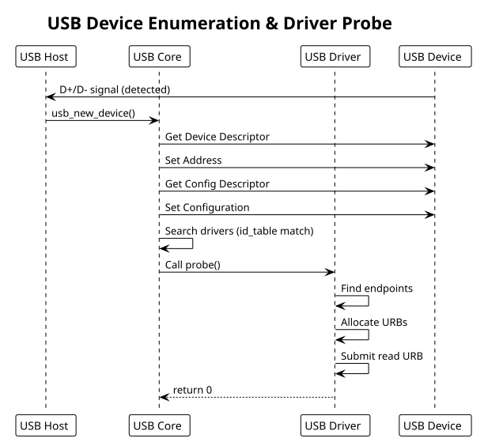

USB Drivers
Table of Contents
USB device drivers: URB (USB Request Block), endpoints, async transfers, HID. Includes simple USB device example.
1. USB Driver Fundamentals
USB drivers communicate via:
- Descriptors: device, config, interface, endpoint (static hardware metadata)
- URBs: USB Request Blocks (async transfer requests)
- Endpoints: unidirectional pipes (CONTROL, INTERRUPT, BULK, ISOC)
Kernel abstracts USB devices via struct usb_device and drivers via struct usb_driver.
2. Driver Registration
#include <linux/usb.h>
#include <linux/usb/input.h>
// Device ID table (matches VID:PID pairs)
static const struct usb_device_id my_usb_devices[] = {
{ USB_DEVICE(0x1234, 0x5678) }, // Vendor ID 0x1234, Product ID 0x5678
{ USB_DEVICE(0x1234, 0x5679) },
{ /* terminator */ }
};
MODULE_DEVICE_TABLE(usb, my_usb_devices);
struct my_usb_dev {
struct usb_device *udev; // underlying USB device
struct usb_interface *interface; // selected interface
unsigned char *bulk_in_buffer;
size_t bulk_in_size;
__u8 bulk_in_endpointAddr;
__u8 bulk_out_endpointAddr;
struct urb *bulk_in_urb; // async read request
struct urb *bulk_out_urb; // async write request
};
static int my_usb_probe(struct usb_interface *intf,
const struct usb_device_id *id)
{
struct usb_device *udev = interface_to_usbdev(intf);
struct usb_host_interface *altsetting = intf->cur_altsetting;
struct usb_endpoint_descriptor *endpoint;
struct my_usb_dev *dev;
int retval = -ENOMEM;
int i;
dev = kzalloc(sizeof(*dev), GFP_KERNEL);
if (!dev)
return -ENOMEM;
dev->udev = usb_get_dev(udev);
dev->interface = intf;
// Find bulk endpoints
for (i = 0; i < altsetting->desc.bNumEndpoints; i++) {
endpoint = &altsetting->endpoint[i].desc;
if (!dev->bulk_in_endpointAddr && usb_endpoint_is_bulk_in(endpoint)) {
dev->bulk_in_endpointAddr = endpoint->bEndpointAddress;
dev->bulk_in_size = usb_endpoint_maxp(endpoint);
}
if (!dev->bulk_out_endpointAddr && usb_endpoint_is_bulk_out(endpoint)) {
dev->bulk_out_endpointAddr = endpoint->bEndpointAddress;
}
}
if (!dev->bulk_in_endpointAddr || !dev->bulk_out_endpointAddr) {
dev_err(&intf->dev, "Could not find bulk endpoints\n");
retval = -ENODEV;
goto error;
}
// Allocate RX buffer
dev->bulk_in_buffer = kmalloc(dev->bulk_in_size, GFP_KERNEL);
if (!dev->bulk_in_buffer) {
retval = -ENOMEM;
goto error;
}
// Create URBs
dev->bulk_in_urb = usb_alloc_urb(0, GFP_KERNEL);
if (!dev->bulk_in_urb) {
retval = -ENOMEM;
goto error;
}
dev->bulk_out_urb = usb_alloc_urb(0, GFP_KERNEL);
if (!dev->bulk_out_urb) {
retval = -ENOMEM;
goto error;
}
// Register device for user access
usb_set_intfdata(intf, dev);
dev_info(&intf->dev, "USB device connected\n");
return 0;
error:
if (dev) {
usb_free_urb(dev->bulk_in_urb);
usb_free_urb(dev->bulk_out_urb);
kfree(dev->bulk_in_buffer);
usb_put_dev(dev->udev);
kfree(dev);
}
return retval;
}
static void my_usb_disconnect(struct usb_interface *intf)
{
struct my_usb_dev *dev = usb_get_intfdata(intf);
usb_set_intfdata(intf, NULL);
// Unlink pending URBs
usb_kill_urb(dev->bulk_in_urb);
usb_kill_urb(dev->bulk_out_urb);
// Cleanup
usb_free_urb(dev->bulk_in_urb);
usb_free_urb(dev->bulk_out_urb);
kfree(dev->bulk_in_buffer);
usb_put_dev(dev->udev);
kfree(dev);
dev_info(&intf->dev, "USB device disconnected\n");
}
static struct usb_driver my_usb_driver = {
.name = "my_usb_device",
.probe = my_usb_probe,
.disconnect = my_usb_disconnect,
.id_table = my_usb_devices,
};
module_usb_driver(my_usb_driver);
3. URB (USB Request Block)
URBs are async transfer requests. Setup, submit, completion callback handles transfer:
// Bulk read (async)
static void my_read_bulk_callback(struct urb *urb)
{
struct my_usb_dev *dev = urb->context;
if (urb->status) {
if (urb->status == -ENOENT ||
urb->status == -ECONNRESET ||
urb->status == -ESHUTDOWN) {
// Device disconnected or shutdown
dev_dbg(&dev->interface->dev, "read unlinked\n");
} else {
dev_err(&dev->interface->dev, "read error: %d\n", urb->status);
}
return;
}
// Process received data
pr_info("Received %d bytes\n", urb->actual_length);
// Resubmit for continuous reading
usb_fill_bulk_urb(dev->bulk_in_urb,
dev->udev,
usb_rcvbulkpipe(dev->udev, dev->bulk_in_endpointAddr),
dev->bulk_in_buffer,
dev->bulk_in_size,
my_read_bulk_callback,
dev);
usb_submit_urb(dev->bulk_in_urb, GFP_ATOMIC);
}
// Submit read
static int my_start_reading(struct my_usb_dev *dev)
{
int retval;
usb_fill_bulk_urb(dev->bulk_in_urb,
dev->udev,
usb_rcvbulkpipe(dev->udev, dev->bulk_in_endpointAddr),
dev->bulk_in_buffer,
dev->bulk_in_size,
my_read_bulk_callback,
dev);
retval = usb_submit_urb(dev->bulk_in_urb, GFP_KERNEL);
if (retval)
dev_err(&dev->interface->dev, "failed to submit URB: %d\n", retval);
return retval;
}
// Bulk write (sync for simplicity)
static int my_write_bulk(struct my_usb_dev *dev, const void *data, size_t len)
{
int actual_length;
int retval;
retval = usb_bulk_msg(dev->udev,
usb_sndbulkpipe(dev->udev, dev->bulk_out_endpointAddr),
(void *)data,
len,
&actual_length,
5000); // 5 second timeout
if (retval < 0)
dev_err(&dev->interface->dev, "write error: %d\n", retval);
return retval;
}
4. USB Pipes
Pipes encode direction and endpoint type:
usb_rcvctrlpipe(dev, endpoint) // control read (host -> device)
usb_sndctrlpipe(dev, endpoint) // control write (device -> host)
usb_rcvbulkpipe(dev, endpoint) // bulk read
usb_sndbulkpipe(dev, endpoint) // bulk write
usb_rcvintpipe(dev, endpoint) // interrupt read
usb_sndintpipe(dev, endpoint) // interrupt write
usb_rcvisocpipe(dev, endpoint) // isochronous read
usb_sndisocpipe(dev, endpoint) // isochronous write
5. Control Transfers (Setup Requests)
Setup packets for device commands:
static int my_usb_control_msg(struct my_usb_dev *dev, u8 request, u16 value)
{
int retval;
unsigned char *buf;
buf = kmalloc(8, GFP_KERNEL);
if (!buf)
return -ENOMEM;
// bmRequestType (direction | type | recipient)
// bRequest, wValue, wIndex, wLength
retval = usb_control_msg(dev->udev,
usb_sndctrlpipe(dev->udev, 0),
request,
USB_DIR_OUT | USB_TYPE_VENDOR | USB_RECIP_DEVICE,
value,
0,
buf,
8,
5000); // timeout ms
kfree(buf);
return retval;
}
6. Example: Simple USB Device Driver
Minimal USB device with read/write endpoints:
// usb_simple.c
#include <linux/module.h>
#include <linux/usb.h>
#define VENDOR_ID 0x1234
#define PRODUCT_ID 0x5678
static const struct usb_device_id usb_device_table[] = {
{ USB_DEVICE(VENDOR_ID, PRODUCT_ID) },
{ }
};
MODULE_DEVICE_TABLE(usb, usb_device_table);
struct usb_device_ctx {
struct usb_device *udev;
struct usb_interface *intf;
unsigned char *in_buffer;
unsigned char *out_buffer;
__u8 in_ep, out_ep;
};
static int usb_probe(struct usb_interface *intf, const struct usb_device_id *id)
{
struct usb_device_ctx *ctx;
struct usb_device *udev = interface_to_usbdev(intf);
struct usb_endpoint_descriptor *in_ep = NULL, *out_ep = NULL;
struct usb_host_interface *altsetting = intf->cur_altsetting;
int i, retval = -ENOMEM;
ctx = kzalloc(sizeof(*ctx), GFP_KERNEL);
if (!ctx)
return -ENOMEM;
ctx->udev = usb_get_dev(udev);
ctx->intf = intf;
// Find endpoints
for (i = 0; i < altsetting->desc.bNumEndpoints; i++) {
struct usb_endpoint_descriptor *ep = &altsetting->endpoint[i].desc;
if (usb_endpoint_is_bulk_in(ep))
in_ep = ep;
else if (usb_endpoint_is_bulk_out(ep))
out_ep = ep;
}
if (!in_ep || !out_ep) {
retval = -ENODEV;
goto error;
}
ctx->in_ep = in_ep->bEndpointAddress;
ctx->out_ep = out_ep->bEndpointAddress;
ctx->in_buffer = kmalloc(512, GFP_KERNEL);
ctx->out_buffer = kmalloc(512, GFP_KERNEL);
if (!ctx->in_buffer || !ctx->out_buffer) {
retval = -ENOMEM;
goto error;
}
usb_set_intfdata(intf, ctx);
dev_info(&intf->dev, "USB device connected\n");
return 0;
error:
if (ctx) {
kfree(ctx->in_buffer);
kfree(ctx->out_buffer);
usb_put_dev(ctx->udev);
kfree(ctx);
}
return retval;
}
static void usb_disconnect(struct usb_interface *intf)
{
struct usb_device_ctx *ctx = usb_get_intfdata(intf);
if (ctx) {
kfree(ctx->in_buffer);
kfree(ctx->out_buffer);
usb_put_dev(ctx->udev);
kfree(ctx);
}
dev_info(&intf->dev, "USB device disconnected\n");
}
static struct usb_driver usb_driver = {
.name = "usb_simple",
.probe = usb_probe,
.disconnect = usb_disconnect,
.id_table = usb_device_table,
};
module_usb_driver(usb_driver);
MODULE_LICENSE("GPL");
MODULE_AUTHOR("Your Name");
MODULE_DESCRIPTION("Simple USB device driver");
7. Userspace Access (via libusb)
#include <libusb-1.0/libusb.h>
#include <stdio.h>
int main() {
libusb_device_handle *handle;
libusb_context *ctx = NULL;
unsigned char data[512];
int transferred;
libusb_init(&ctx);
// Find device
handle = libusb_open_device_with_vid_pid(ctx, VENDOR_ID, PRODUCT_ID);
if (!handle) {
fprintf(stderr, "Device not found\n");
return 1;
}
// Read from bulk IN endpoint
libusb_bulk_transfer(handle, 0x81, // endpoint address
data, sizeof(data),
&transferred, 5000);
printf("Read %d bytes\n", transferred);
// Write to bulk OUT endpoint
libusb_bulk_transfer(handle, 0x01, // endpoint address
(unsigned char *)"hello", 5,
&transferred, 5000);
libusb_close(handle);
libusb_exit(ctx);
return 0;
}
8. Common Patterns
- Always check URB status in completion callback
- Use
usb_get_dev()to increment refcount,usb_put_dev()to decrement - Kill/unlink pending URBs in disconnect
- Bulk transfers can be sync (
usb_bulk_msg) or async (URB-based) - Use timeouts (5000ms typical) for reliability
9. USB Enumeration Diagram
